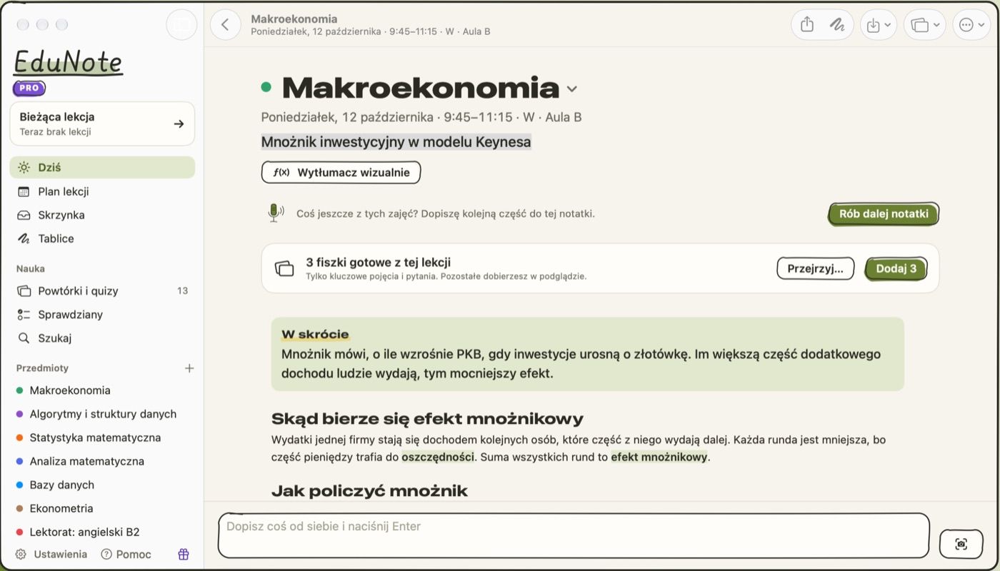
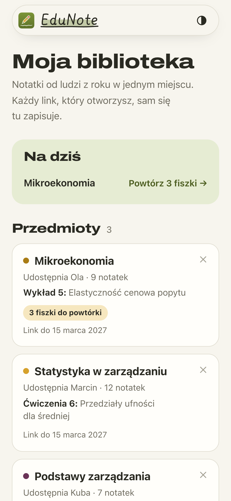
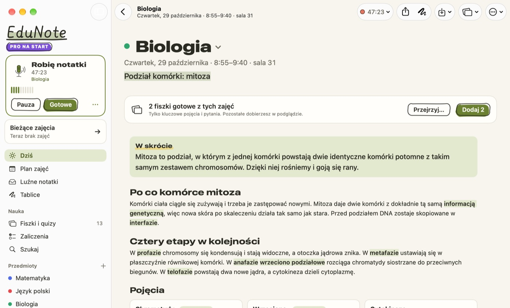
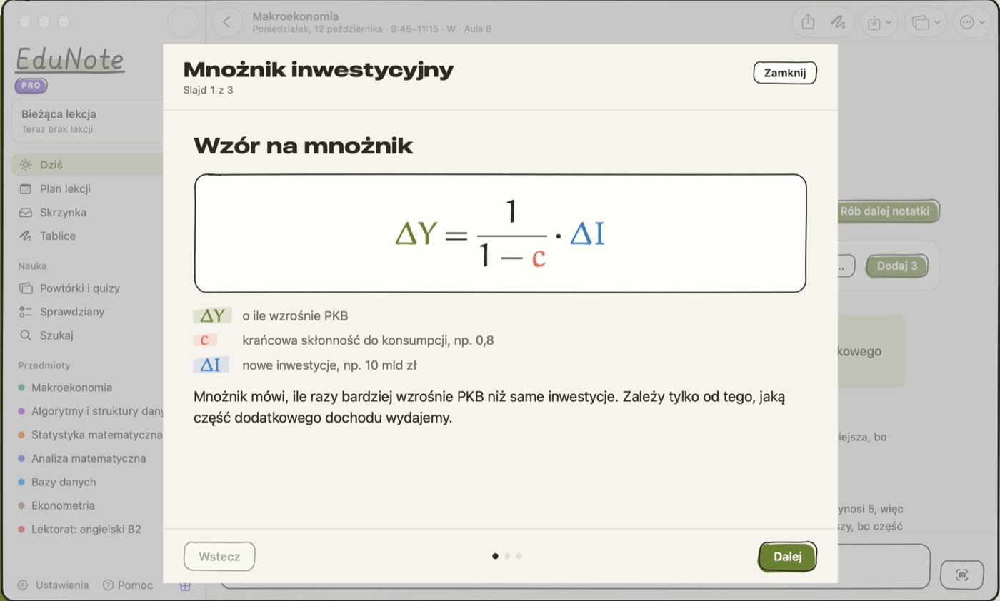
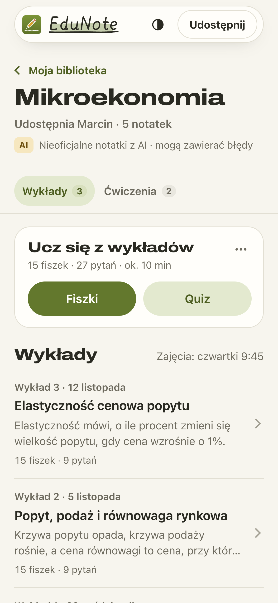
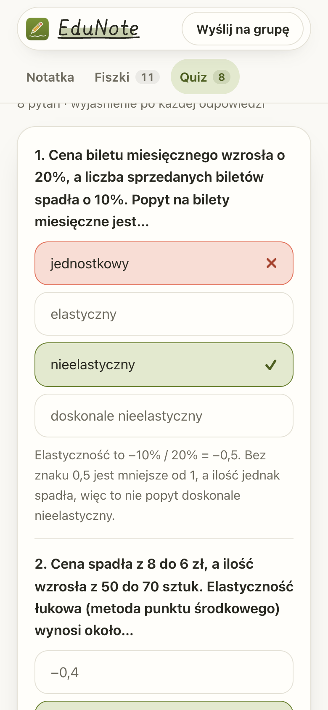

Ty słuchasz.
EduNote notuje.
Notatki, fiszki i quiz z każdych zajęć. Cały rok uczy się z nich na telefonie, we własnej bibliotece.
Notujesz na Macu z macOS 15 · uczysz się na każdym telefonie


Jak to działa
-
Na zajęciach
Klikasz „Notuj zajęcia”. EduNote słucha na Macu, za zgodą prowadzącego, a dźwięk znika po kilku minutach.

-
Po zajęciach
Masz gotową notatkę: streszczenie, pojęcia, rozpisane wzory i fiszki. Mowę rozpoznaje sam Mac.

-
Dla całego roku
Wysyłasz jeden link na grupę. Każdy ma przedmiot w swojej bibliotece, z fiszkami i quizem.

Moja biblioteka
Notatki od ludzi z roku w jednym miejscu
Każdy link, który otworzysz, sam trafia do Twojej biblioteki. Wracasz do niej z telefonu przed kolokwium, bez szukania linku na czacie. Bez konta, bez instalowania i bez Maca.

Czy tak wolno?
Notujesz dla siebie, tak samo jak w zeszycie. W typowej sytuacji prawo autorskie pozwala na taki osobisty użytek, a EduNote jest tylko narzędziem: dźwięk znika po kilku minutach, zostają Twoje notatki. Swoje notatki możesz udostępniać ludziom z roku. Pełnej transkrypcji nie udostępniaj bez zgody prowadzącego, a jeśli prowadzący prosi, żeby nie notować, uszanuj to.
Za darmo na start
Notatki od kogoś z roku czytasz i powtarzasz za darmo, w każdej przeglądarce. Aplikacja na Maca:
- TerazWszystko za darmo, bez karty. To wczesny dostęp, w którym zbieram opinie studentów.
- Po wczesnym dostępieJeszcze 14 dni pełnej wersji.
- PotemDarmowy plan: notowanie zajęć, plan zajęć i fiszki bez limitu oraz 3 notatki AI w tygodniu. Bez limitu: EduNote Pro za 24,99 zł miesięcznie w App Store.
Pytania
Czy wolno notować wykład z EduNote?
W typowej sytuacji tak, jeśli notujesz do własnej nauki, a prowadzący się nie sprzeciwia. Na części uczelni trzeba zapytać o zgodę z góry. Dźwięk jest tylko na Twoim Macu i znika po kilku minutach, a do AI trafia sam tekst. Szczegóły i przepisy: Skąd to wiemy?
Czy na studiach wolno uczyć się z AI?
Zwykle tak, ale o zakresie na przedmiocie decyduje prowadzący. Na Uniwersytecie Łódzkim zarządzenie rektora nr 73/2026 (PDF) wprost dopuszcza AI do streszczeń i nauki do egzaminów; zasady dla przedmiotu są w sylabusie.
Nie mam Maca. Co mogę zrobić?
Uczyć się z notatek, które wyśle Ci ktoś z roku: notatka, fiszki i quiz działają w każdej przeglądarce, a przedmiot zostaje w Twojej bibliotece. Wystarczy jedna osoba z Makiem na roku. Jeśli chcesz EduNote na Windowsa, Androida albo iPhone'a, zapisz się tutaj:
Kto płaci, gdy jedna osoba notuje dla całego roku?
Osoby, które dostają link, nigdy nie płacą. Teraz nie płaci też osoba notująca, bo aplikacja jest za darmo. Po wczesnym dostępie darmowy plan daje 3 notatki AI w tygodniu, więc przy notowaniu wszystkich wykładów zwykle potrzebny będzie EduNote Pro (24,99 zł miesięcznie).
Kto pisze notatki i co z moimi danymi?
Notatki pisze model Claude firmy Anthropic (USA). Do AI trafia sam tekst zajęć, bez dźwięku, przez serwer EduNote w UE (Frankfurt). Szczegóły są w polityce prywatności.
Czy poradzi sobie w dużej sali?
Tak, jeśli Mac dobrze słyszy prowadzącego, więc lepiej usiąść bliżej i nie zasłaniać mikrofonu. Przed nauką warto zerknąć, czy liczby i nazwy własne się zgadzają.
Co widzą osoby, którym wyślę link?
Notatkę, pojęcia, fiszki i quiz. Nigdy dźwięk ani transkrypcję, a nazwisko prowadzącego z planu zajęć EduNote zamienia na inicjały. Link działa do końca sesji poprawkowej: notatki z semestru zimowego do 15 marca, z letniego do 30 września.
Co, jeśli notatka narusza czyjeś prawa?
Zgłoś ją przez formularz. Każde zgłoszenie czyta człowiek, zwykle w ciągu 48 godzin.